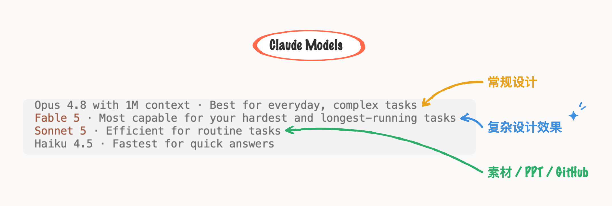
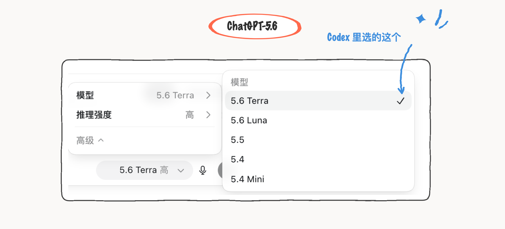
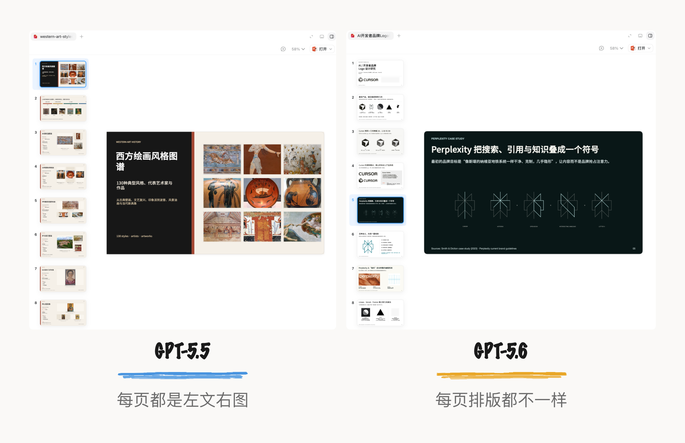
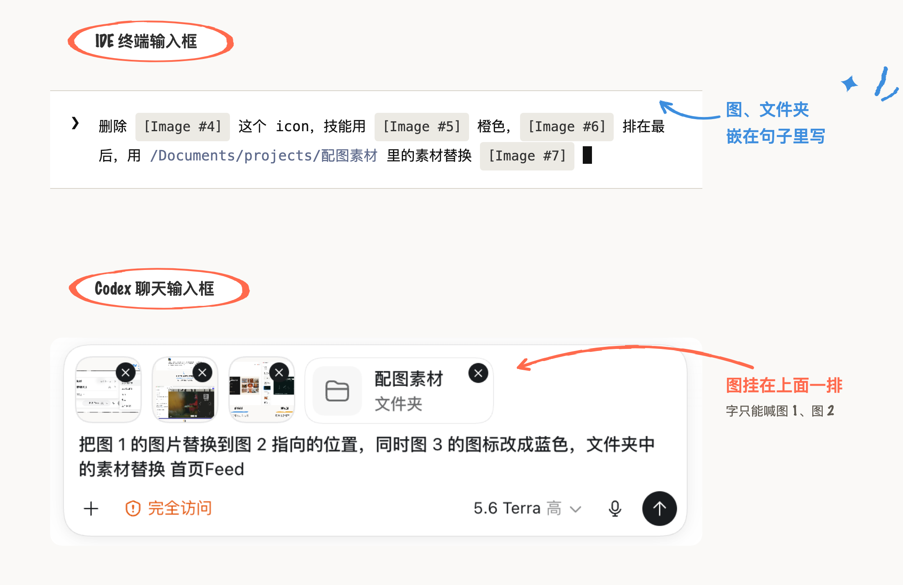
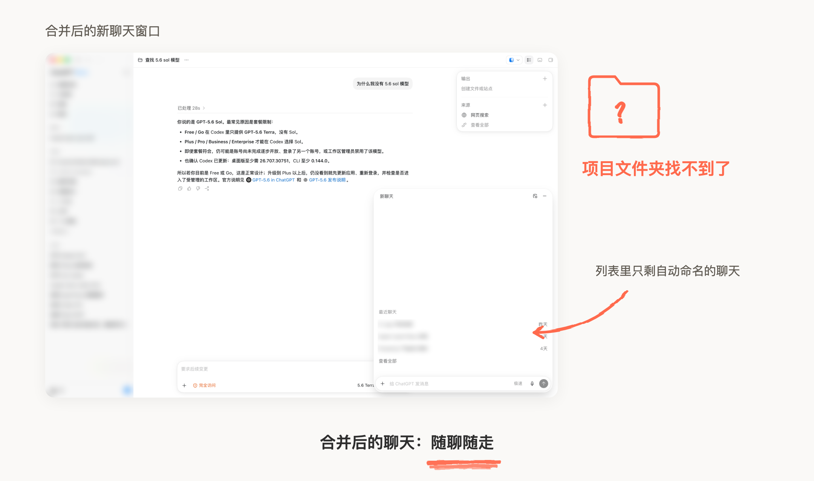
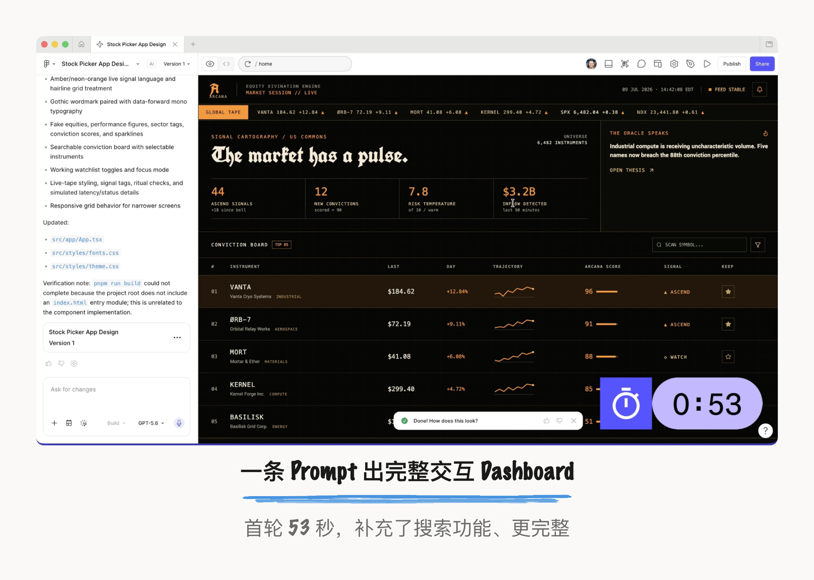
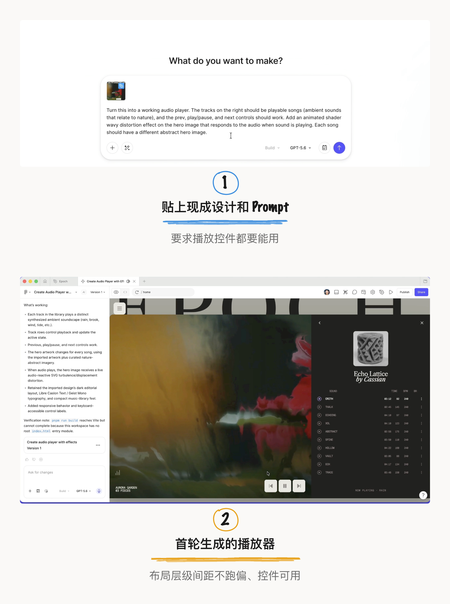

一个新 AI Model 发布，“世界又被改变了”，作为设计师又感觉到危机感，然后开始玩这个 AI Model，了解新模型的优点和局限性，慢慢适应加入工作流。几周后、几个月后，这个循环重复开始。
新模型做一遍旧任务
感知 AI 能力提升
我最近处于 Fable 5 阶段。对于 Claude 模型，官方定义用途是：Fable 5 定位是处理最困难且长时间运行任务，Opus 4.8 定位是处理日常复杂任务，Sonnet 5 定位是日常任务；所以我在 IDE 中分配的工作任务是：Fable 用于复杂设计效果的实现，Opus 用于常规设计的实现，Sonnet 用于收集素材、整理 PPT、推送 GitHub 这些辅助管理类任务。有时候忘记切模型，不小心用 Fable 做低阶任务类似 PPT（感觉浪费了），一下子能感受到 Fable 的生成质量和速度都秒杀了；有时也会刻意切换这三个模型来处理复杂设计任务，就是想比较一下生成效果质量的差别。

浅试了最新模型 GPT-5.6 与新版 Codex。GPT-5.6 卖点之一是“设计能力和审美的跃升”，我就从生成 PPT 入手，在 Codex 模式下选了 5.6 Terra（我是 Go 套餐，没有 Sol），就输入一句 Prompt：“帮我收集 Cursor Perplexity 这种风格的 Logo，生成 PPT。” Prompt 中没有写风格偏向，主要是想测一测新模型会怎么设计。

首次生成的 PPT 设计感确实增强了很多，有点惊艳。PPT 的内容是极简、未来感 Logo 资料，所以 PPT 也是从这个定位生成了简约的排版风格。而且重点是每一页的排版都不一样，有上下布局、左右布局、不同的网格布局；整体很丰富、工作量不小，导致一次 Token 全用完了。我之前用 5.5 也生成过几套 PPT，首次生成的排版都是一样的：左文、右图，相对单一。同样的任务交给新 Model 再做一遍，可以感知到 AI 生成质量的进步。

主力在 IDE
Codex 辅助
•IDE 对各种格式更包容。我大多数 vibe coding 是在 IDE（cursor）内，好处是学一套工具、方便引用各种 AI 模型，可以无限探索复杂设计、用 Browser 快速看效果，都在一个工具里。Codex 这类 chat 式 AI 工具的聊天框有很大的限制：对于多个图片、多个文件，prompt 写起来太费劲了。
比如我在终端输入框内 prompt 会这么写：把图 1 的这个样式 xxxx，同时把文件下的某个素材替换进图 2...图3XXX... 图N，可以拖进各种格式的文件，本质是文字、图、文件都是以 token 结构输入；而在 CodeX 的输入框中，图在上方，文字在下方，描述起来就不顺畅了。

不过 Codex 对于知识搜集、生成 PPT/Excel 还是很好用的。因为 IDE 不支持这类格式的查看。
ChatGPT 和 Codex 合并后，我体验到了更难用的 AI 产品。
合并之前，我一般用 ChatGPT 问知识、搜集资料，所以我一直充的是 Go 套餐，倒也没有触发过 Token 限制；后面这类任务我也直接转用 Codex 了，Codex 对于知识类任务的优势是可以生成 PPT 这类格式，但是那时只能查看 PPT，不能编辑（是的，当时我很震惊）。5.6 更新合并后，Codex 模式现在可以编辑 PPT 了，操作也是指哪改哪。
合并之后，整个体验最难以忍受的是：ChatGPT 独立模式是建的项目文件夹怎么也找不到。 本来觉得聊天窗口可以帮助我在进行 Codex 任务时，随时聊天式地解答问题，这种需求也真实被满足了；但是，聊天不基于项目文件夹了，实行的是一个随聊随走的体验模式，这推翻了之前养成的行为习惯。之前建立项目是手动的、文件夹命名是精心维护的；另外，项目制的价值在于它会基于整个项目的 Context，帮我提供更准确的回复，也省 Token。

即使现在 ChatGPT 手机端仍然可以从项目文件夹发起聊天，在电脑端的窗口也只通过自动生成的聊天名称来筛选，损失了上层信息。
Figma Make 验证了 ChatGPT-5.6
首轮生成质量提升
这次 ChatGPT-5.6 发布后，Figma Make 第一时间支持了，Figma 通过几个内测案例，得出结论是：首轮产出的质量和速度都有所提升了。从干净的 UI 到响应式布局到高保真交互，可以快速获得高质量的原型。
第一个案例是从零生成股票追踪平台，首轮生成视觉效果很到位。Prompt 要求「Financial-Gothic 美学、黑底配琥珀色或霓虹橙文字的高密度数据布局」，一次 Prompt 出来的是完整的交互 Dashboard，还自己加上了键盘快捷键和搜索。首轮耗时 53 秒，已经挺快了。
过程中 GPT-5.6 遇到问题时不会停止，而是进行调查并自我修复。比如 GPT-5.6 识别出了空白后自己修复了。

第二个案例是基于已有设计，构建音乐播放器，首轮生成复刻到位。复制现成的 Figma Design 内的 UI 画板文件，到 Make 模式下的 Chat 中粘贴并输入提示词：变成能交互的音频播放器，播放器控件都要能用」。生成的结果保留了原设计的布局、视觉层级、间距和比例，控件全部正常，Hero 图上还加了一层动画波形，交互效果也很好。按官方说法是：保留了布局、视觉层级、间距和比例。

在 Figma Make 中和 AI 协作最耗的就是来回迭代：描述问题、等重新生成、再验证，每一轮都是 Token 和时间。设计师的真实场景是画布上已经有一套设计，模型要在这个基础上往前做，而且不能跑偏。模型自愈、Token 效率可以解决设计场景下的繁重工作。
Figma CEO Dylan 最近经常发表言论表达“对未来设计更有信心”的观点，在鼓励设计师们也能有同样的自信：
越来越多的设计进入世界，注意力经济是真实的，因此创造力/设计/观点就是你脱颖而出的方式。你的品牌、营销、产品设计、愉悦时刻和整体客户旅程必须出色。
而你必须探索相当长的时间才能想出一些精彩的东西。设计过程输入的东西不仅是传统办公室工作且容易产出的内容，阅读文档、与同事交谈、研究等。输入也可能包括在公园散步、前一天晚上做的有趣梦、通勤时在收音机上听到的好听歌曲、1800 年代的画作或其他各种文化/情感输入。
现在是时候更加大胆，承担更多创意风险，加倍投入设计的力量了。
本文素材来自 Figma 官方博客 GPT-5.6 is now available in Figma Make，以及我自己在 Codex / ChatGPT 新版里的实测截图与使用体验。